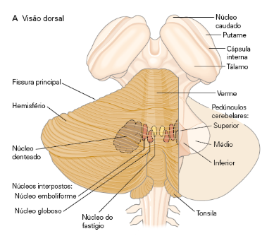
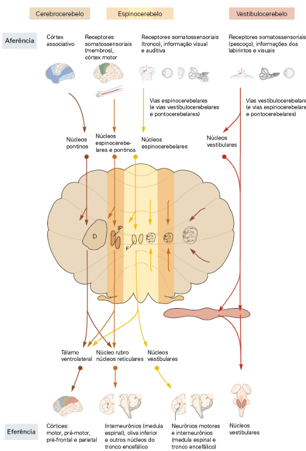

<main>
    <section class="section">
        <div class="container narrow">
            <h1 class="">Estudo sobre Cerebelo</h1>
            <article class="doc-content">
                <div class="doc-content">
                    <p>
                        
                    </p>
                    <ul>
                        <li>
                            Age antes da retroalimentação sensorial decorrente do movimento, fornecendo controle antecipado das contrações musculares.
                            Essa antecipação permite a execução de movimentos fluidos e suaves que não dependem totalmente de retroalimentação
                            sensorial, já que ocorre sempre posterior a uma ação.
                        </li>
                        <li>
                            Utiliza modelos internos do corpo para processar e comparar as aferências sensoriais com cópias de comandos motores,
                            desempenhando um papel especial no tempo motor e perceptivo.
                        </li>
                        <li>Fundamental para adaptar e aprender habilidades motoras, automatizando comandos.</li>
                        <li>
                            Possui extensa conectividade com áreas não motoras do córtex cerebral, sugerindo que exerce funções semelhantes no
                            desempenho e aprendizado de comportamentos motores e não motores.
                        </li>
                    </ul>
                    <h3>Sobre a identificação de falhas</h3>
                    <ul>
                        <li>
                            O cerebelo recebe cópia do comando motor do córtex motor e, em paralelo, recebe aferências somatossensoriais
                            (propriocepção da medula espinhal e bulbo e informações vestibulares/visuais do tronco). Assim, ele consegue prever e
                            checar se a execução está de acordo com o plano, detectando pequenos desvios entre o planejado e o executado, permitindo
                            ajustes finos e imediatos.
                        </li>
                        <li>
                            Núcleo olivar inferior: atua como um detector de erro mais global. Ele envia fibras trepadeiras ao cerebelo quando há
                            erros grosseiros ou inesperados, sinalizando a necessidade de reaprendizado ou ajuste do modelo interno.
                        </li>
                    </ul>
                    <h3>Sobre o Encaminhamento das Correções</h3>
                    <ul>
                        <li>
                            Correções rápidas e automáticas (online): O cerebelo pode enviar sinais para núcleos do tronco encefálico (ex.: núcleo
                            vestibular, núcleo rubro, formação reticular). Esses sinais descem diretamente para a medula espinhal e realizam ajustes
                            finos imediatos, como manter o equilíbrio ou corrigir a trajetória de um membro.
                        </li>
                        <li>
                            Ajustes planejados e de maior escala: O cerebelo projeta fortemente para o tálamo, que retransmite para áreas do córtex
                            motor e pré-motor. Esse caminho não é instantâneo, mas é essencial para atualizar o planejamento motor e consolidar
                            padrões aprendidos.
                        </li>
                    </ul>
                    <p>
                        
                    </p>
                    <h3>Forte Associação com o Córtex</h3>
                    <ul>
                        <li>
                            As conexões recíprocas entre o cerebelo e o córtex cerebral incluem os córtices sensitivo e motor, bem como amplas regiões
                            dos córtices parietal e pré-frontal. As conexões cerebrocerebelares são organizadas como uma série de circuitos paralelos,
                            fechados e recorrentes, onde uma determinada região do córtex cerebral faz conexões eferentes e aferentes com uma
                            determinada parte do cerebelo-.
                        </li>
                        <li>
                            <p>
                                Não existem axônios corticais que terminem diretamente no cerebelo. Sempre existe uma estação intermediária (núcleos
                                pontinos na via de ida; tálamo na via de volta).
                            </p>
                        </li>
                        <li><p>Núcelo Denteado participa mais do planejamento</p></li>
                        <li>Interpolar e Fastigial do monitoramento</li>
                    </ul>
                </div>
            </article>
        </div>
    </section>
</main>
